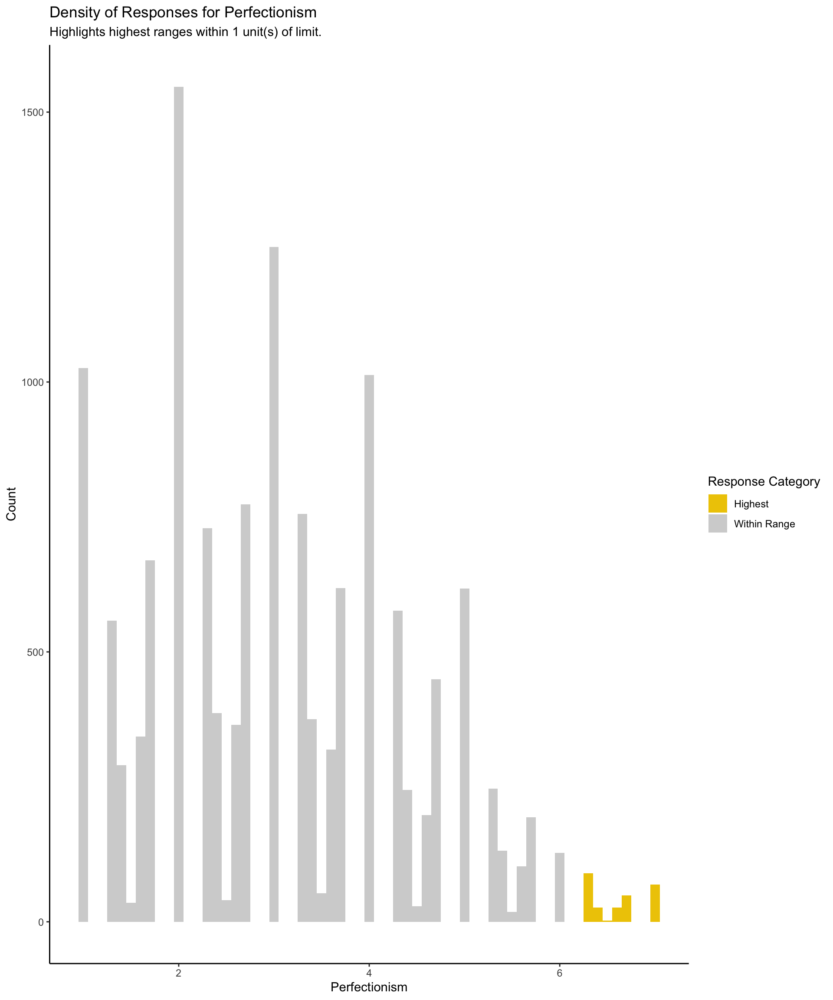
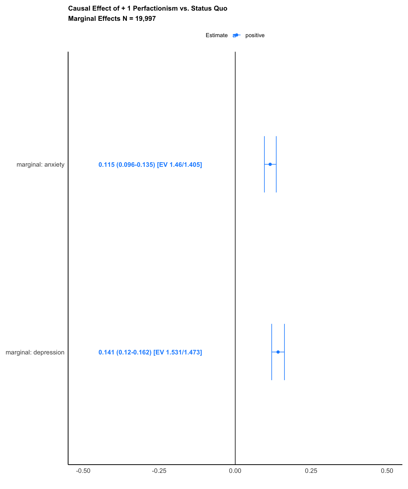

![]()

Introduction
A central question in the scientific study of XXXX is whether YYYY fosters ZZZZZ (De Coulanges 1903; Johnson 2005; Norenzayan et al. 2016; Schloss and Murray 2011; Sosis and Bressler 2003; Swanson 1967; Watts et al. 2015; Watts et al. 2016; Wheatley 1971; Whitehouse et al. 2023). However, quantifying causal effects for YYYY, and many other social behaviours presents significant challenges.
Investigators have limited scope to randomise YYYY on ZZZZZ. On the other hand, valid causal inferences from non-experimental or observational data must combine high-resolution repeated-measures time-series data with robust methods for causal inference. Few studies meet this standard…
An encouraging recent attempt to obtain valid causal inference is PPPP’s thoughtful investigation of the relationships between religious attendance, beliefs, and affiliation on blood donations among pregnant women and their partners who were residents of Bristol, United Kingdom, in the early 1990s and participated in the Avon Longitudinal Study of Parents and Children, N=13,477 mothers and N=13,424 partners (Major-Smith 2023). PPPP’s study begins with a careful overview of the threats to causal inference from confounding and selection bias….
Although we may sometimes use cross-sectional associations to obtain credible suggestions about causality, we cannot typically attach causal interpretations, at least not without strong assumptions about the relative order and timing of events (VanderWeele 2021). Indeed, below we report an analysis restricted to baseline New Zealand Attitudes and Values Study data that observes a 2.65 times overstatement for the effect of perfectionism on anxiety and a 2.43 times overstatement for perfectionism’s effect on depression…
Here, to obtain causal inferences from time-series data, we leverage comprehensive panel data from a SYNTHETIC DATASET for 19,997 participants in the New Zealand Attitudes and Values Study from 2018-2021 to quantify the effects of clearly defined interventions in religious attendance across the population of New Zealanders on two features of mental health: “Depression” and “Anxiety” These outcomes are called “counterfactual” or “potential” outcomes, terms we use interchangeably (Pearl 2009; Robins 1986; Rubin 2005; Splawa-Neyman et al. 1990; Van Der Laan and Rose 2018).1
A fundamental challenge in observational studies is to ensure balance between the variables in interventions or “treatments” to be compared that might affect both treatment and the potential outcomes under treatment (Shiba and Kawahara 2021). We call the state of imbalance confounding, and the strategy for ensuring balance, confounding control. In this study, we express the interventions on religious service as “modified treatment policies” (Díaz et al. 2021, 2023; Haneuse and Rotnitzky 2013; Hoffman et al. 2023). We obtain causal inferences by contrasting inferred population averages under different modified treatment policies.
Our initial causal contrast investigates: “What would be the average difference across the New Zealand population if everyone were to become one unit greater on a 1-7 ordinal scale in Perfectionism versus the status quo” This contrast addresses the practically interesting question …
A second analysis investigates whether there are differences in the causal effects of perfectionism among those born in New Zealand and those born oveseas. A considerable body of acculturation research suggestions… yadda yadda
Note that our approach does not focus on testing specific hypotheses; instead, we aim to compute our pre-specified causal contrasts with high accuracy by combining appropriate time-series data and robust methods for causal inference (Hernán and Greenland 2024).
Method
Sample
Data were SIMULATED from responses to the New Zealand Attitudes and Values Study (NZAVS), an annual longitudinal national probability panel study of social attitudes, personality, ideology, and health outcomes in New Zealand. Chris G. Sibley started the New Zealand Attitudes and Values Study in 2009, which has grown to include a community of over fifty researchers. In this simulated dataset there were 20,000 New Zealand residents. The New Zealand Attitudes and Values Study operates independently of political or corporate funding and is based in a university setting. Data summaries for our study sample on all measures used in this study are found in Appendices B-D. For more details about the New Zealand Attitudes and Values Study see: OSF.IO/75SNB.
Treatment Indicator
Perfectionism was assessed using a three item “almost perfect scale”:
- Yadda
- Yadda
- Dadda
Measures of Well-Being
Kessler-6. Yadda…
Anxiety: “Yadda
Depression: Yadda
Subgroup Analysis
We assessed group differences in these effects ….
We provide comprehensive details of all measures in Appendix A.
Causal Interventions
We define three targeted causal contrasts (causal estimands) as interventions on prespecified modified treatment policies (refer to Haneuse and Rotnitzky (2013); Dı́az et al. (2021); Díaz et al. (2023)). Let A_t denote the treatment – monthly frequency of religious service. There are three time points: t\in{0,1,2}, where t=0 denotes the baseline wave, t=1, the treatment wave, and t=2 at the end of the study. \mathbf{d}(\cdot) denotes a modified treatment policy f_\mathbf{d}. When a treatment is fixed to a level defined by the modified treatment policy, perhaps contrary to a participant’s observed level of treatment, we use the lowercase symbol a_1. Here, the functions defined by modified treatment policies f_\mathbf{d} are interventions that fix A_1 to a_1.
- Regular Religious Service Treatment: Administer treatment that leads to a +1 unit greater perfectionism to everyone in the adult population from 1-7 on the perfectionism scale. If an individual’s perfectionism is within one unit of the top of the range, adminster the maximum value at the range:
\mathbf{d}^\lambda (a_1) = \begin{cases} 7 & \text{if } a_1 < 6 \\ a_1 + 1 & \text{otherwise} \end{cases}
- Status Quo – No Treatment: Apply no treatment. Each expected mean outcome is calculated using each individual’s natural (observed) value of religious service attendance.
\mathbf{d}(a_1) = a_1
Causal Contrasts
From these policies, we compute the following causal contrasts.
Target Contrast B: ‘Regular vs. Status Quo’: What is the marginal effect of the treatment in New Zealand compared with its status quo?
\text{Regular Religious Service vs. No Treatment} = E[Y(\mathbf{d}^\lambda) - Y(\mathbf{d})]
This contrast reflects a policy-relevant hypothetical experiment examining the effect of shifting everyone’s perfectionism up by one point, allowing us to quantitatively assess how much a society in which everyone attends would differ from a society in its current state.
Identification Assumptions
To consistently estimate a causal effect, investigators must satisfy three assumptions:
Causal consistency: potential outcomes must correspond with observed outcomes under the treatments in the data. Essentially, we assume potential outcomes do not depend on how the treatment was administered, conditional on measured covariates (VanderWeele 2009; VanderWeele and Hernan 2013).
Exchangeability: given observed covariates, we assume treatment assignment is independent of the potential outcomes to be contrasted. In other words, there is “no unmeasured confounding” (Chatton et al. 2020; Hernan and Robins 2024).
Positivity: every individual must have a non-zero chance of receiving the treatment, regardless of their covariate values Westreich and Cole (2010). We evaluate this assumption in each study by examining changes in religious service attendance from baseline (NZAVS time 10) to the treatment wave (NZAVS time 11). For further discussion of these assumptions in the context of NZAVS studies, see Bulbulia et al. (2023).
Target Population
The target population for this study comprises New Zealand residents as represented in the baseline wave of the SIMULATED New Zealand Attitudes and Values Study (NZAVS) during the years 2018-2019, weighted by New Zealand Census weights for age, gender, and ethnicity (refer to Sibley (2021)). The NZAVS is a national probability study designed to reflect the broader New Zealand population accurately. Despite its comprehensive scope, the NZAVS does have some limitations in its demographic representation. Notably, it tends to slightly under-sample males and individuals of Asian descent while slightly over-sampling females and Māori (the indigenous peoples of New Zealand). To address these disparities and enhance the accuracy of our findings, we apply constructed survey weights to address the gender imbalance, which was presented largest of threat to external validity. These sample weights were integrated into statistical models using the weights option in lmtp (Williams and Díaz 2021), following protocols stated in Bulbulia (2024a).
Eligibility Criteria
To be included in the analysis of this study, participants needed to meet the following eligibility criteria:
Inclusion Criteria
- Enrolled in the SIMULATED 2018 wave of the New Zealand Attitudes and Values Study (NZAVS time 10).
- Missing covariate data at baseline was permitted, and the data was subjected to imputation methods to reduce bias. Only information obtained at baseline was used for such imputation (refer to Zhang et al. (2023)). Participants may have been lost to follow-up the end of study NZAVS time 11 or 12. We constructed inverse probability of censoring weights for missing responses at time 11. We adjusted for attrition and non-response at time 12 automatically by specifying a censoring indicator to
lmtpwhen estimating outcomes as described below.
Exclusion Criteria
- Missing data in the perfectionism scale at baseline, wave 10 of the SIMULATED New Zealand Attitudes and Values Study.
A total of 19,997 SIMULATED individuals met these criteria and were included in the study.
Causal Identification
Table 1 presents three Single World Intervention Graphs (SWIGs) that describe our confounding control (identification strategy) (Richardson et al. 2023; Richardson and Robins 2013, 2023; Robins and Richardson 2010; Shpitser et al. 2022; Shpitser and Tchetgen 2016). Our approach consistently applies the same identification strategy across all functions estimated in this study. Unlike standard causal diagrams, SWIGs allow us to separately read the factorisation of the conditional dependencies for the distribution of each set of counterfactual outcomes under each modified treatment policy (Richardson and Robins 2013). Note, that the natural value of the treatment A is obtained both from its observed instances and from baseline historical data, including the baseline treatment. This method ensures that our analysis accurately captures the causal effects of flexible treatment regimes that rely on levels of religious service attendance at the treatment wave, while ensuring balance for each treatment function that we compare (Dı́az et al. 2021; Muñoz and Van Der Laan 2012; Young et al. 2014).
Confounding Control
To manage confounding in our analysis, we implement VanderWeele (2019)’s modified disjunctive cause criterion by following these steps:
- Identified all common causes of both the treatment and outcomes to ensure a comprehensive approach to confounding control.
- Excluded instrumental variables that affect the exposure but not the outcome. Instrumental variables do not contribute to controlling confounding and can reduce the efficiency of the estimates.
- Included proxies for unmeasured confounders affecting both exposure and outcome. According to the principles of d-separation, using proxies allows us to control for their associated unmeasured confounders indirectly.
- Controlled for baseline exposure and baseline outcome. Both are used as proxies for unmeasured common causes, enhancing the robustness of our causal estimates.
Appendix B details the covariates we included for confounding control. These methods adhere to the guidelines provided in (Bulbulia 2024a) and were pre-specified in our study protocol https://osf.io/ce4t9/.
Missing Data
To mitigate bias from missing data, we implement the following strategies:
Baseline missingness: we employed the ppm algorithm from the mice package in R (Van Buuren 2018) to impute missing baseline data. This method allowed us to reconstruct incomplete datasets by estimating a plausible value for missing observation. Because we could only pass one data set to the lmtp, we employed single imputation. About 2% of covariate values were missing at baseline. Eligibility for the study required fully observed baseline treatment measures as well as treatment wave treatment measures. Again, we only used baseline data to impute baseline missingness (refer to Zhang et al. (2023)).
treatment-wave missingness in time 11 (treatment wave): to adjust for censoring in the treatment wave, we estimated inverse probability of censoring weights by predicting loss-to follow up from all indicators, including the baseline values of the treatment and outcomes. We used same superlearners employed in the causal estimation models (ranger, xgboost, glmnet) and impliented 10-fold cross validation.
Outcome missingness in time 12 (outcome wave): to address confounding and selection bias arising from missing responses and panel attrition, we applied censoring weights obtained using nonparametric machine learning ensembles afforded by the lmtp package (and its dependencies) in R (Williams and Díaz 2021).
Statistical Estimator
We perform statistical estimation using semi-parametric Targeted Learning, specifically a Targeted Minimum Loss-based Estimation (TMLE) estimator. TMLE is a robust method that combines machine learning techniques with traditional statistical models to estimate causal effects while providing valid statistical uncertainty measures for these estimates (Laan and Gruber 2012; Van der Laan 2014).
TMLE operates through a two-step process that involves modelling both the outcome and treatment (exposure). Initially, TMLE employs machine learning algorithms to flexibly model the relationship between treatments, covariates, and outcomes. This flexibility allows TMLE to account for complex, high-dimensional covariate spaces efficiently without imposing restrictive model assumptions (Laan et al. 2014; Van Der Laan and Rose 2011, 2018). The outcome of this step is a set of initial estimates for these relationships.
The second step of TMLE involves “targeting” these initial estimates by incorporating information about the observed data distribution to improve the accuracy of the causal effect estimate. TMLE achieves this precision through an iterative updating process, which adjusts the initial estimates towards the true causal effect. This updating process is guided by the efficient influence function, ensuring that the final TMLE estimate is as close as possible, given the measures and data, to the targeted causal effect while still being robust to model-misspecification in either the outcome or the treatment model (Laan et al. 2014).
Again, a central feature of TMLE is its double-robustness property. If either the treatment model or the outcome model is correctly specified, the TMLE estimator will consistently estimate the causal effect. Additionally, we used cross-validation to avoid over-fitting, following the pre-stated protocols in Bulbulia (2024a). The integration of TMLE and machine learning technologies reduces the dependence on restrictive modelling assumptions and introduces an additional layer of robustness. For further details of the specific targeted learning strategy we favour, see (Díaz et al. 2021; Hoffman et al. 2022, 2023). We perform estimation using the lmtp package (Williams and Díaz 2021). We used the superlearner library for semi-parametric estimation with the predefined libraries SL.ranger, SL.glmnet, and SL.xgboost (Chen et al. 2023; Polley et al. 2023; Wright and Ziegler 2017). We created graphs, tables and output reports using the margot package (Bulbulia 2024b).
Sensitivity Analysis Using the E-value
To assess the sensitivity of results to unmeasured confounding, we report VanderWeele and Ding’s “E-value” in all analyses (VanderWeele and Ding 2017). The E-value quantifies the minimum strength of association (on the risk ratio scale) that an unmeasured confounder would need to have with both the exposure and the outcome (after considering the measured covariates) to explain away the observed exposure-outcome association (Linden et al. 2020; VanderWeele et al. 2020). To evaluate the strength of evidence, we use the bound of the E-value 95% confidence interval closest to 1.
Scope of Interventions
To illustrate the magnitude of the shift interventions we contrast, we provide histograms in Figure 1, that display the distribution of treatments during the treatment wave. Figure 1: The intervention less than one unit at the top of the range is presented in colour.
Evidence for Change in the Treatment Variable
Table 2 clarifies the change in the treatment variable from the baseline wave to the baseline + 1 wave across the sample. Assessing change in a variable is essential for evaluating the positivity assumption and recovering evidence for the incident exposure effect of the treatment variable (Danaei et al. 2012; Hernan and Robins 2024; VanderWeele et al. 2020). We find that state 4 (weekly attendance) and state 0 present the highest overall. However, movement between these states reveals they are not deterministic. States 1, 2, 3, and 5 exhibit more frequent jumps in and out of these states, suggesting lower stability and/or measurement error.
| From | State 1 | State 2 | State 3 | State 4 | State 5 | State 6 | State 7 |
|---|---|---|---|---|---|---|---|
| State 1 | 893 | 484 | 194 | 40 | 16 | 3 | 2 |
| State 2 | 657 | 1737 | 904 | 283 | 78 | 9 | 1 |
| State 3 | 237 | 1073 | 1368 | 768 | 245 | 40 | 5 |
| State 4 | 66 | 335 | 803 | 1076 | 523 | 108 | 10 |
| State 5 | 24 | 77 | 253 | 531 | 579 | 223 | 26 |
| State 6 | 7 | 9 | 38 | 106 | 205 | 216 | 53 |
| State 7 | 2 | 1 | 5 | 8 | 25 | 45 | 48 |
Results
Study 1: Causal Effects of Perfectionism on Anxiety and Depression
Results for the treatment contrasts between perfectionism and the status quo on mental health are displayed in Figure 2 and Table 3. These results are measured on the causal difference scale.

| E[Y(1)]-E[Y(0)] | 2.5 % | 97.5 % | E_Value | E_Val_bound | |
|---|---|---|---|---|---|
| marginal: anxiety | 0.115 | 0.096 | 0.135 | 1.460 | 1.405 |
| marginal: depression | 0.141 | 0.120 | 0.162 | 1.531 | 1.473 |
A Longitudinal Modified Treatment Policy (LMTP) calculates the expected outcome difference between treatment and contrast conditions over a sequential regime of treatments for a prespecified target population.
For ‘marginal: depression’, the effect estimate is 0.141 [0.12, 0.162]. The E-value for this estimate is 1.531, with a lower bound of 1.473. At this lower bound, unmeasured confounders would need a minimum association strength with both the intervention sequence and outcome of 1.473 to negate the observed effect. Weaker confounding would not overturn it. We infer evidence for causality.
For ‘marginal: anxiety’, the effect estimate is 0.115 [0.096, 0.135]. The E-value for this estimate is 1.46, with a lower bound of 1.405. At this lower bound, unmeasured confounders would need a minimum association strength with both the intervention sequence and outcome of 1.405 to negate the observed effect. Weaker confounding would not overturn it. We infer evidence for causality.
Subgroup Analysis: Those Born in NZ
Figure 3 present results for the treatment contrasts within the two subgroups, evaluating the effect of a one unit increase in perfectionism vs the status qu. These results are presented on the difference scale in standardized units.
Table 4 presents the results for those born in New Zealand. Table 5 presents results for those born overseas.
| E[Y(1)]-E[Y(0)] | 2.5 % | 97.5 % | E_Value | E_Val_bound | |
|---|---|---|---|---|---|
| born NZ: anxiety | 0.113 | 0.093 | 0.134 | 1.455 | 1.394 |
| born NZ: depression | 0.145 | 0.121 | 0.168 | 1.542 | 1.478 |
For ‘born NZ: depression’, the effect estimate is 0.145 [0.121, 0.168]. The E-value for this estimate is 1.542, with a lower bound of 1.478. At this lower bound, unmeasured confounders would need a minimum association strength with both the intervention sequence and outcome of 1.478 to negate the observed effect. Weaker confounding would not overturn it. We infer evidence for causality.
For ‘born NZ: anxiety’, the effect estimate is 0.113 [0.093, 0.134]. The E-value for this estimate is 1.455, with a lower bound of 1.394. At this lower bound, unmeasured confounders would need a minimum association strength with both the intervention sequence and outcome of 1.394 to negate the observed effect. Weaker confounding would not overturn it. We infer evidence for causality.
| E[Y(1)]-E[Y(0)] | 2.5 % | 97.5 % | E_Value | E_Val_bound | |
|---|---|---|---|---|---|
| born overseas: anxiety | 0.113 | 0.075 | 0.152 | 1.455 | 1.342 |
| born overseas: depression | 0.143 | 0.101 | 0.185 | 1.537 | 1.424 |
For ‘born overseas: depression’, the effect estimate is 0.143 [0.101, 0.185]. The E-value for this estimate is 1.537, with a lower bound of 1.424. At this lower bound, unmeasured confounders would need a minimum association strength with both the intervention sequence and outcome of 1.424 to negate the observed effect. Weaker confounding would not overturn it. We infer evidence for causality.
For ‘born overseas: anxiety’, the effect estimate is 0.113 [0.075, 0.152]. The E-value for this estimate is 1.455, with a lower bound of 1.342. At this lower bound, unmeasured confounders would need a minimum association strength with both the intervention sequence and outcome of 1.342 to negate the observed effect. Weaker confounding would not overturn it. We infer evidence for causality.
Findings
Comparing the difference in the mean outcomes between to the two groups for anxiety: The difference in means is 2e-04 with a standard error of 0.0223 and a 95% CI of [-0.0436, 0.0439].. We therefore do not detect a reliable difference between those born in New Zealand and those born elsewhere.
Comparing the difference in the mean outcomes between to the two groups for depression: The difference in means is 2e-04 with a standard error of 0.0223 and a 95% CI of [-0.0436, 0.0439].. We therefore do not detect a reliable difference between those born in New Zealand and those born elsewhere.
Additional Study: Comparison of Causal Inference Results with Cross-Sectional Regressions
To better evaluate the contributions of our methodology to current practice, we conducted a series of cross-sectional analyses using the baseline wave data. We quantified the statistical associations between religious service attendance and our focal prosocial outcomes. We included all regression covariates from the causal models (including sample weights) for each analysis, obviously omitting the outcome measured at baseline, i.e. the response variable.
Cross-sectional anxiety result: the change in expected kessler-6 anxiety for a one-unit increase in perfectionism is b = 0.31; (95% CI 0.30, 0.32). This result is 2.65 per cent greater than the effect estimated from the ‘+1 vs. status quo’ causal contrast (0.115), indicating an overstatement in the cross-sectional regression model.
Cross-sectional depression result: the change in expected kessler-6 depression for a one-unit increase in perfectionism is b = 0.34; (95% CI 0.33, 0.35). This result is 2.43 per cent greater than the effect estimated from the ‘+1 vs. status quo’ causal contrast (0.141), indicating an overstatement in the cross-sectional regression model.
These findings underscore that the results of cross-sectional regressions, although suggestive, can considerably diverge from those obtained from the causal analysis of panel data.
Discussion
Considerations
First, as stated above, our causal inferences turn on three assumptions, which are worth revisiting:
(i). Unmeasured confounding: although we employ robust methods for causal inference, our results depend on the effectiveness of our strategy to control for confounding. Our sensitivity analyses address the potential impacts of unmeasured confounders. Nevertheless, the presence and influence of such confounders are uncertain and unverifiable from our data.
(ii). Causal consistency: the observed outcomes must correspond to the counterfactual treatments contrasted. Although “religious service attendance” may appear conditionally independent of the outcomes given baseline covariates, interpreting these interventions remains challenging. “Religious service attendance” varies widely, encompassing everything from informal gatherings at homes to formal services in cathedrals across New Zealand’s religious diversity. This type of “treatment” does not mirror a straightforward medical intervention like a vaccine. The heterogeneity of “religious service” limits the clarity of our results, an issue no amount of data or analysis can resolve because “religious service” reflects a broad spectrum of community activities.
(iii). Positivity: we have confirmed that religious service attendance varies within our sample and have used semi-parametric models with ensemble learning and cross-validation to prevent data over-extrapolation and model over-fitting. Conceptually, it is crucial for valid causal inference that every potential level of “treatment” to religious services is realistically possible (refer to discussion in VanderWeele (2017)). Although there are instances realised in our data of secular individuals initiating religious service and frequent attendees stopping (refer to Table 2), it might stretch credulity too far to imagine that such changes are possible for everyone.
Second, our study confronts the spectre of measurement error: both direct and correlated measurement errors can introduce biases, either by implying effects where none exist or by attenuating true effects (VanderWeele and Hernán 2012). Importantly, evaluating prosociality using multiple measures while also controlling for these measures and the treatment at baseline helps to mitigate measurement error concerns. Nevertheless, unknown combinations of measurement error might nevertheless bias our results. The outcomes and estimates we report here are best-considered approximations.
Third, we do not examine treatment effect heterogeneity: identifying which subgroups experience the strongest responses remains a task for future research. Such investigations are crucial for making informed policy decisions and tailoring advice relevant to those subgroups of the population who might benefit most. Perhaps the most obvious stratum is religious affiliates (VanderWeele 2017).
Fourth, the transportability of our findings remains unclear: New Zealand is our target population. Our findings generalise to this population. However, the transportability of our findings to other settings—whether our results generalise beyond our targeted New Zealand population—remains an open question, a matter for future investigations.
Observations and Recommendations
Ethics
{authors blinded}
Data Availability
{authors blinded}
Acknowledgements
{authors blinded}
Appendix A: Measures
Age (waves: 1-15)
We asked participants’ ages in an open-ended question (“What is your age?” or “What is your date of birth?”).
Born in New Zealand
Charitable Donations (Study 1 outcome)
Using one item from Hoverd and Sibley (2010), we asked participants, “How much money have you donated to charity in the last year?”.
Charitable Volunteering (Study 1 outcome)
We measured hours of volunteering using one item from Sibley et al. (2011): “Hours spent … voluntary/charitable work.”
Children Number (waves: 1-3, 4-15)
We measured the number of children using one item from Bulbulia et al. (2015). We asked participants, “How many children have you given birth to, fathered, or adopted. How many children have you given birth to, fathered, or adopted?” or “How many children have you given birth to, fathered, or adopted. How many children have you given birth to, fathered, and/or parented?” (waves: 12-15).
Disability
We assessed disability with a one-item indicator adapted from Verbrugge (1997). It asks, “Do you have a health condition or disability that limits you and that has lasted for 6+ months?” (1 = Yes, 0 = No).
Education Attainment (waves: 1, 4-15)
We asked participants, “What is your highest level of qualification?”. We coded participants’ highest finished degree according to the New Zealand Qualifications Authority. Ordinal-Rank 0-10 NZREG codes (with overseas school quals coded as Level 3, and all other ancillary categories coded as missing) See:https://www.nzqa.govt.nz/assets/Studying-in-NZ/New-Zealand-Qualification-Framework/requirements-nzqf.pdf
Employment (waves: 1-3, 4-11)
We asked participants, “Are you currently employed? (This includes self-employed or casual work)”.
Ethnicity
Based on the New Zealand Census, we asked participants, “Which ethnic group(s) do you belong to?”. The responses were: (1) New Zealand European; (2) Māori; (3) Samoan; (4) Cook Island Māori; (5) Tongan; (6) Niuean; (7) Chinese; (8) Indian; (9) Other such as DUTCH, JAPANESE, TOKELAUAN. Please state:. We coded their answers into four groups: Maori, Pacific, Asian, and Euro (except for Time 3, which used an open-ended measure).
Fatigue
We assessed subjective fatigue by asking participants, “During the last 30 days, how often did … you feel exhausted?” Responses were collected on an ordinal scale (0 = None of The Time, 1 = A little of The Time, 2 = Some of The Time, 3 = Most of The Time, 4 = All of The Time).
Honesty-Humility-Modesty Facet (waves: 10-14)
Participants indicated the extent to which they agree with the following four statements from Campbell et al. (2004) , and Sibley et al. (2011) (1 = Strongly Disagree to 7 = Strongly Agree)
i. I want people to know that I am an important person of high status, (Waves: 1, 10-14)
ii. I am an ordinary person who is no better than others.
iii. I wouldn't want people to treat me as though I were superior to them.
iv. I think that I am entitled to more respect than the average person is.Hours of Childcare
We measured hours of exercising using one item from Sibley et al. (2011): ’Hours spent … looking after children.”
To stabilise this indicator, we took the natural log of the response + 1.
Hours of Housework
We measured hours of exercising using one item from Sibley et al. (2011): “Hours spent … housework/cooking”
To stabilise this indicator, we took the natural log of the response + 1.
Hours of Exercise
We measured hours of exercising using one item from Sibley et al. (2011): “Hours spent … exercising/physical activity”
To stabilise this indicator, we took the natural log of the response + 1.
Hours of Childcare
We measured hours of exercising using one item from Sibley et al. (2011): ’Hours spent … looking after children.”
To stabilise this indicator, we took the natural log of the response + 1.
Hours of Exercise
We measured hours of exercising using one item from Sibley et al. (2011): “Hours spent … exercising/physical activity”
To stabilise this indicator, we took the natural log of the response + 1.
Hours of Housework
We measured hours of exercising using one item from Sibley et al. (2011): “Hours spent … housework/cooking”
To stabilise this indicator, we took the natural log of the response + 1.
Hours of Sleep
Participants were asked, “During the past month, on average, how many hours of actual sleep did you get per night?”.
Hours of Work
We measured work hours using one item from Sibley et al. (2011): “Hours spent … working in paid employment.”
To stabilise this indicator, we took the natural log of the response + 1.
Income (waves: 1-3, 4-15)
Participants were asked, “Please estimate your total household income (before tax) for the year XXXX”. To stabilise this indicator, we first took the natural log of the response + 1, and then centred and standardised the log-transformed indicator.
Kessler-6: Psychological Distress (waves: 2-3,4-15)
We measured psychological distress using the Kessler-6 scale (kessler2002?), which exhibits strong diagnostic concordance for moderate and severe psychological distress in large, crosscultural samples (kessler2010?; prochaska2012?). Participants rated during the past 30 days, how often did… (1) “… you feel hopeless”; (2) “… you feel so depressed that nothing could cheer you up”; (3) “… you feel restless or fidgety”; (4)“… you feel that everything was an effort”; (5) “… you feel worthless”; (6) ” you feel nervous?” Ordinal response alternatives for the Kessler-6 are: “None of the time”; “A little of the time”; “Some of the time”; “Most of the time”; “All of the time.”
Male Gender (waves: 1-15)
We asked participants’ gender in an open-ended question: “what is your gender?” or “Are you male or female?” (waves: 1-5). Female was coded as 0, Male as 1, and gender diverse coded as 3 (Fraser et al. 2020). (or 0.5 = neither female nor male)
Here, we coded all those who responded as Male as 1, and those who did not as 0.
Mini-IPIP 6 (waves: 1-3,4-15)
We measured participants’ personalities with the Mini International Personality Item Pool 6 (Mini-IPIP6) (Sibley et al. 2011), which consists of six dimensions and each dimension is measured with four items:
agreeableness,
- I sympathize with others’ feelings.
- I am not interested in other people’s problems. (r)
- I feel others’ emotions.
- I am not really interested in others. (r)
conscientiousness,
- I get chores done right away.
- I like order.
- I make a mess of things. (r)
- I often forget to put things back in their proper place. (r)
extraversion,
- I am the life of the party.
- I don’t talk a lot. (r)
- I keep in the background. (r)
- I talk to a lot of different people at parties.
honesty-humility,
- I feel entitled to more of everything. (r)
- I deserve more things in life. (r)
- I would like to be seen driving around in a very expensive car. (r)
- I would get a lot of pleasure from owning expensive luxury goods. (r)
neuroticism, and
- I have frequent mood swings.
- I am relaxed most of the time. (r)
- I get upset easily.
- I seldom feel blue. (r)
openness to experience
- I have a vivid imagination.
- I have difficulty understanding abstract ideas. (r)
- I do not have a good imagination. (r)
- I am not interested in abstract ideas. (r)
Each dimension was assessed with four items and participants rated the accuracy of each item as it applies to them from 1 (Very Inaccurate) to 7 (Very Accurate). Items marked with (r) are reverse coded.
NZ-Born (waves: 1-2,4-15)
We asked participants, “Which country were you born in?” or “Where were you born? (please be specific, e.g., which town/city?)” (waves: 6-15).
NZ Deprivation Index (waves: 1-15)
We used the NZ Deprivation Index to assign each participant a score based on where they live (Atkinson et al. 2019). This score combines data such as income, home ownership, employment, qualifications, family structure, housing, and access to transport and communication for an area into one deprivation score.
NZSEI Occupational Prestige and Status (waves: 8-15)
We assessed occupational prestige and status using the New Zealand Socio-economic Index 13 (NZSEI-13) (Fahy et al. 2017a). This index uses the income, age, and education of a reference group, in this case the 2013 New Zealand census, to calculate a score for each occupational group. Scores range from 10 (Lowest) to 90 (Highest). This list of index scores for occupational groups was used to assign each participant an NZSEI-13 score based on their occupation.
We assessed occupational prestige and status using the New Zealand Socio-economic Index 13 (NZSEI-13) (Fahy et al. 2017b). This index uses the income, age, and education of a reference group, in this case, the 2013 New Zealand census, to calculate a score for each occupational group. Scores range from 10 (Lowest) to 90 (Highest). This list of index scores for occupational groups was used to assign each participant an NZSEI-13 score based on their occupation.
Opt-in
The New Zealand Attitudes and Values Study allows opt-ins to the study. Because the opt-in population may differ from those sampled randomly from the New Zealand electoral roll; although the opt-in rate is low, we include an indicator (yes/no) for this variable.
Partner (No/Yes)
“What is your relationship status?” (e.g., single, married, de-facto, civil union, widowed, living together, etc.)
Politically Conservative
We measured participants’ political conservative orientation using a single item adapted from Jost (2006).
“Please rate how politically liberal versus conservative you see yourself as being.”
(1 = Extremely Liberal to 7 = Extremely Conservative)
Religious Service Attendance
If participants answered yes to “Do you identify with a religion and/or spiritual group?” we measured their frequency of church attendence using one item from Sibley and Bulbulia (2012): “how many times did you attend a church or place of worship in the last month?”. Those participants who were not religious were imputed a score of “0”.
Rural/Urban Codes
Participants residence locations were coded according to a five-level ordinal categorisation ranging from “Urban” to Rural, see Sibley (2021).
Short-Form Health
Participants’ subjective health was measured using one item (“Do you have a health condition or disability that limits you, and that has lasted for 6+ months?”; 1 = Yes, 0 = No) adapted from Verbrugge (1997).
Sample Origin
Wave enrolled in NZAVS, see Sibley (2021).
Support received: money (waves 10-12) (Study 4 outcomes)
The NZAVS has a ‘revealed’ measure of received help and support measured in hours of support in the previous week. The items are:
Please estimate how much help you have received from the following sources in the last week?
- family…MONEY (hours)
- friends…MONEY (hours)
- members of my community…MONEY (hours)
Because this measure is highly variable, we convert responses to binary indicators: 0 = none/1 any
Support received: time (waves 10-13) (Study 3 outcomes)
Please estimate how much help you have received from the following sources in the last week.
- family…TIME (hours)
- friends…TIME (hours)
- members of my community…TIME (hours)
Because this measure is highly variable, we convert responses to binary indicators: 0 = none/1 any
Total Siblings
Participants were asked the following questions related to sibling counts:
- Were you the 1st born, 2nd born, or 3rd born, etc, child of your mother?
- Do you have siblings?
- How many older sisters do you have?
- How many younger sisters do you have?
- How many older brothers do you have?
- How many younger brothers do you have?
A single score was obtained from sibling counts by summing responses to the “How many…” items. From these scores, an ordered factor was created ranging from 0 to 7, where participants with more than 7 siblings were grouped into the highest category.
Appendix B. Baseline Demographic Statistics
| Demographic Variables | N = 19,997 |
|---|---|
| Age | NA |
| Mean (SD) | 49 (14) |
| Range | 18, 98 |
| IQR | 39, 60 |
| Male | 7,425 (37%) |
| Edu | NA |
| Mean (SD) | 5.29 (2.72) |
| Range | 0.00, 10.00 |
| IQR | 3.00, 7.00 |
| Unknown | 510 |
| Eth Cat | NA |
| euro | 15,850 (80%) |
| maori | 2,280 (12%) |
| pacific | 498 (2.5%) |
| asian | 1,107 (5.6%) |
| Unknown | 262 |
| Partner | 14,501 (75%) |
| Unknown | 649 |
| Employed | 15,884 (80%) |
| Unknown | 39 |
| Born Nz | 15,436 (78%) |
| Unknown | 232 |
| Neighbourhood Community | NA |
| Mean (SD) | 4.20 (1.67) |
| Range | 1.00, 7.00 |
| IQR | 2.99, 5.95 |
| Unknown | 113 |
| Household Inc log | NA |
| Mean (SD) | 11.39 (0.76) |
| Range | 0.69, 14.40 |
| IQR | 11.00, 11.92 |
| Unknown | 1,529 |
| Parent | 14,037 (71%) |
| Unknown | 156 |
| Religion Religious | 7,148 (36%) |
| Unknown | 301 |
| Urban | 12,291 (62%) |
| Unknown | 129 |
Table 6 baseline demographic statistics for couples who met inclusion criteria.
Appendix C: Treatment Statistics
| Exposure Variables by Wave | 2018, N = 19,997 | 2019, N = 19,997 |
|---|---|---|
| Perfectionism | 3.02 (2.03, 4.04) | 2.99 (2.00, 4.02) |
| Unknown | 0 | 5,558 |
tbl-table-exposures-code presents baseline (NZAVS time 10) and exposure wave (NZAVS time 11) statistics for the exposure variable: perfectionism (range 1-7).
Imbalance of Confounding Covariates Treatments
Figure 4 shows imbalance of covariates on the treatment at the treatment wave. The variable on which there is strongest imbalance is the baseline measure of religious service attendance. It is important to adjust for this measure both for confounding control and to better estimate an incident exposure effect for the religious service at the treatment wave (in contrast to merely estimating a prevalence effect). See VanderWeele et al. (2020).
Appendix D: Baseline and End of Study Outcome Statistics
| Outcome Variables by Wave | 2018, N = 19,997 | 2020, N = 19,997 |
|---|---|---|
| Kessler Latent Anxiety | 1.04 (0.66, 1.68) | 1.03 (0.65, 1.67) |
| Unknown | 203 | 6,768 |
| Kessler Latent Depression | 0.33 (0.01, 0.98) | 0.32 (0.01, 0.97) |
| Unknown | 207 | 6,765 |
Table 8 presents baseline and end-of-study descriptive statistics for the outcome variables.
References
Atkinson, J, Salmond, C, and Crampton, P (2019) NZDep2018 index of deprivation, user’s manual., Wellington.
Bulbulia, J (2024a) A practical guide to causal inference in three-wave panel studies. PsyArXiv Preprints. doi:10.31234/osf.io/uyg3d.
Bulbulia, JA (2024b) Margot: MARGinal observational treatment-effects. doi:10.5281/zenodo.10907724.
Bulbulia, JA, Afzali, MU, Yogeeswaran, K, and Sibley, CG (2023) Long-term causal effects of far-right terrorism in New Zealand. PNAS Nexus, 2(8), pgad242.
Bulbulia, JA, Shaver, JH, Greaves, L, Sosis, R, and Sibley, CG (2015) Religion and parental cooperation: An empirical test of slone’s sexual signaling model. In S. J. D. amd Van Slyke J., ed., The attraction of religion: A sexual selectionist account, Bloomsbury Press, 29–62.
Campbell, WK, Bonacci, AM, Shelton, J, Exline, JJ, and Bushman, BJ (2004) Psychological entitlement: Interpersonal consequences and validation of a self-report measure. Journal of Personality Assessment, 83(1), 29–45.
Chatton, A, Le Borgne, F, Leyrat, C, … Foucher, Y (2020) G-computation, propensity score-based methods, and targeted maximum likelihood estimator for causal inference with different covariates sets: a comparative simulation study. Scientific Reports, 10(1), 9219. doi:10.1038/s41598-020-65917-x.
Chen, T, He, T, Benesty, M, … Yuan, J (2023) Xgboost: Extreme gradient boosting. Retrieved from https://CRAN.R-project.org/package=xgboost
Danaei, G, Tavakkoli, M, and Hernán, MA (2012) Bias in observational studies of prevalent users: lessons for comparative effectiveness research from a meta-analysis of statins. American Journal of Epidemiology, 175(4), 250–262. doi:10.1093/aje/kwr301.
De Coulanges, F (1903) La cité antique: Étude sur le culte, le droit, les institutions de la grèce et de rome, Hachette.
Díaz, I, Williams, N, Hoffman, KL, and Schenck, EJ (2021) Non-parametric causal effects based on longitudinal modified treatment policies. Journal of the American Statistical Association. doi:10.1080/01621459.2021.1955691.
Díaz, I, Williams, N, Hoffman, KL, and Schenck, EJ (2023) Nonparametric causal effects based on longitudinal modified treatment policies. Journal of the American Statistical Association, 118(542), 846–857. doi:10.1080/01621459.2021.1955691.
Dı́az, I, Hejazi, NS, Rudolph, KE, and Der Laan, MJ van (2021) Nonparametric efficient causal mediation with intermediate confounders. Biometrika, 108(3), 627–641.
Fahy, KM, Lee, A, and Milne, BJ (2017b) New Zealand socio-economic index 2013, Wellington, New Zealand: Statistics New Zealand-Tatauranga Aotearoa.
Fahy, KM, Lee, A, and Milne, BJ (2017a) New Zealand socio-economic index 2013, Wellington, New Zealand: Statistics New Zealand-Tatauranga Aotearoa.
Fraser, G, Bulbulia, J, Greaves, LM, Wilson, MS, and Sibley, CG (2020) Coding responses to an open-ended gender measure in a New Zealand national sample. The Journal of Sex Research, 57(8), 979–986. doi:10.1080/00224499.2019.1687640.
Haneuse, S, and Rotnitzky, A (2013) Estimation of the effect of interventions that modify the received treatment. Statistics in Medicine, 32(30), 5260–5277.
Hernan, MA, and Robins, JM (2024) Causal inference: What if?, Taylor & Francis. Retrieved from https://www.hsph.harvard.edu/miguel-hernan/causal-inference-book/
Hernán, MA, and Greenland, S (2024) Why stating hypotheses in grant applications is unnecessary. JAMA, 331(4), 285–286.
Hoffman, KL, Salazar-Barreto, D, Rudolph, KE, and Díaz, I (2023) Introducing longitudinal modified treatment policies: A unified framework for studying complex exposures. doi:10.48550/arXiv.2304.09460.
Hoffman, KL, Schenck, EJ, Satlin, MJ, … Díaz, I (2022) Comparison of a target trial emulation framework vs cox regression to estimate the association of corticosteroids with COVID-19 mortality. JAMA Network Open, 5(10), e2234425. doi:10.1001/jamanetworkopen.2022.34425.
Hoverd, WJ, and Sibley, CG (2010) Religious and denominational diversity in new zealand 2009. New Zealand Sociology, 25(2), 59–87.
Johnson, DD (2005) God’s punishment and public goods: A test of the supernatural punishment hypothesis in 186 world cultures. Human Nature, 16, 410–446.
Jost, JT (2006) The end of the end of ideology. American Psychologist, 61(7), 651–670. doi:10.1037/0003-066X.61.7.651.
Laan, MJ van der, and Gruber, S (2012) Targeted minimum loss based estimation of causal effects of multiple time point interventions. The International Journal of Biostatistics, 8(1).
Laan, MJ van der, Luedtke, AR, and Dı́az, I (2014) Discussion of identification, estimation and approximation of risk under interventions that depend on the natural value of treatment using observational data, by Jessica Young, Miguel Hernán, and James Robins. Epidemiologic Methods, 3(1), 21–31.
Linden, A, Mathur, MB, and VanderWeele, TJ (2020) Conducting sensitivity analysis for unmeasured confounding in observational studies using e-values: The evalue package. The Stata Journal, 20(1), 162–175.
Major-Smith, D (2023) Exploring causality from observational data: An example assessing whether religiosity promotes cooperation. Evolutionary Human Sciences, 5, e22.
Muñoz, ID, and Van Der Laan, M (2012) Population intervention causal effects based on stochastic interventions. Biometrics, 68(2), 541–549.
Norenzayan, A, Shariff, AF, Gervais, WM, … Henrich, J (2016) The cultural evolution of prosocial religions. Behavioral and Brain Sciences, 39, e1. doi:10.1017/S0140525X14001356.
Pearl, J (2009) Causal inference in statistics: An overview.
Polley, E, LeDell, E, Kennedy, C, and Laan, M van der (2023) SuperLearner: Super learner prediction. Retrieved from https://CRAN.R-project.org/package=SuperLearner
Richardson, TS, Evans, RJ, Robins, JM, and Shpitser, I (2023) Nested Markov properties for acyclic directed mixed graphs. The Annals of Statistics, 51(1), 334–361.
Richardson, TS, and Robins, JM (2013) Single world intervention graphs: A primer. In Second UAI workshop on causal structure learning, Bellevue, Washington, Citeseer. Retrieved from https://citeseerx.ist.psu.edu/document?repid=rep1&type=pdf&doi=07bbcb458109d2663acc0d098e8913892389a2a7
Richardson, TS, and Robins, JM (2023) Potential outcome and decision theoretic foundations for statistical causality. Journal of Causal Inference, 11(1), 20220012.
Robins, J (1986) A new approach to causal inference in mortality studies with a sustained exposure period—application to control of the healthy worker survivor effect. Mathematical Modelling, 7(9-12), 1393–1512.
Robins, JM, and Richardson, TS (2010) Alternative graphical causal models and the identification of direct effects. Causality and Psychopathology: Finding the Determinants of Disorders and Their Cures, 84, 103–158.
Rubin, DB (2005) Causal inference using potential outcomes: Design, modeling, decisions. Journal of the American Statistical Association, 100(469), 322–331. Retrieved from https://www.jstor.org/stable/27590541
Schloss, JP, and Murray, MJ (2011) Evolutionary accounts of belief in supernatural punishment: A critical review. Religion, Brain & Behavior, 1(1), 46–99.
Shiba, K, and Kawahara, T (2021) Using propensity scores for causal inference: Pitfalls and tips. Journal of Epidemiology, 31(8), 457–463.
Shpitser, I, Richardson, TS, and Robins, JM (2022) Multivariate counterfactual systems and causal graphical models. In Probabilistic and causal inference: The works of Judea Pearl, 813–852.
Shpitser, I, and Tchetgen, ET (2016) Causal inference with a graphical hierarchy of interventions. Annals of Statistics, 44(6), 2433.
Sibley, C. G., and Bulbulia, JA (2012) Healing those who need healing: How religious practice affects social belonging. Journal for the Cognitive Science of Religion, 1, 29–45.
Sibley, CG (2021) Sampling procedure and sample details for the new zealand attitudes and values study.
Sibley, CG, Luyten, N, Purnomo, M, … Robertson, A (2011) The Mini-IPIP6: Validation and extension of a short measure of the Big-Six factors of personality in New Zealand. New Zealand Journal of Psychology, 40(3), 142–159.
Sosis, R, and Bressler, ER (2003) Cooperation and commune longevity: A test of the costly signaling theory of religion. Cross-Cultural Research, 37(2), 211–239.
Splawa-Neyman, J, Dabrowska, DM, and Speed, TP (1990) On the application of probability theory to agricultural experiments. Essay on principles. Section 9. Statistical Science, 465–472.
Swanson, GE (1967) Religion and regime: A sociological account of the Reformation.
Van Buuren, S (2018) Flexible imputation of missing data, CRC press.
Van der Laan, MJ (2014) Targeted estimation of nuisance parameters to obtain valid statistical inference. The International Journal of Biostatistics, 10(1), 29–57.
Van Der Laan, MJ, and Rose, S (2011) Targeted Learning: Causal Inference for Observational and Experimental Data, New York, NY: Springer. Retrieved from https://link.springer.com/10.1007/978-1-4419-9782-1
Van Der Laan, MJ, and Rose, S (2018) Targeted Learning in Data Science: Causal Inference for Complex Longitudinal Studies, Cham: Springer International Publishing. Retrieved from http://link.springer.com/10.1007/978-3-319-65304-4
VanderWeele, TJ (2009) Concerning the consistency assumption in causal inference. Epidemiology, 20(6), 880. doi:10.1097/EDE.0b013e3181bd5638.
VanderWeele, TJ (2017) Causal effects of religious service attendance? Social Psychiatry and Psychiatric Epidemiology, 52, 1331–1336.
VanderWeele, TJ (2019) Principles of confounder selection. European Journal of Epidemiology, 34(3), 211–219.
VanderWeele, TJ (2021) Can sophisticated study designs with regression analyses of observational data provide causal inferences? JAMA Psychiatry, 78(3), 244–246.
VanderWeele, TJ, and Ding, P (2017) Sensitivity analysis in observational research: Introducing the e-value. Annals of Internal Medicine, 167(4), 268–274. doi:10.7326/M16-2607.
VanderWeele, TJ, and Hernan, MA (2013) Causal inference under multiple versions of treatment. Journal of Causal Inference, 1(1), 1–20.
VanderWeele, TJ, and Hernán, MA (2012) Results on differential and dependent measurement error of the exposure and the outcome using signed directed acyclic graphs. American Journal of Epidemiology, 175(12), 1303–1310. doi:10.1093/aje/kwr458.
VanderWeele, TJ, Mathur, MB, and Chen, Y (2020) Outcome-wide longitudinal designs for causal inference: A new template for empirical studies. Statistical Science, 35(3), 437–466.
Verbrugge, LM (1997) A global disability indicator. Journal of Aging Studies, 11(4), 337–362. doi:10.1016/S0890-4065(97)90026-8.
Watts, J, Bulbulia, J. A., Gray, RD, and Atkinson, QD (2016) Clarity and causality needed in claims about big gods., 39, 41–42. doi:DOI:10.1017/S0140525X15000576.
Watts, J, Greenhill, SJ, Atkinson, QD, Currie, TE, Bulbulia, J, and Gray, RD (2015) Broad supernatural punishment but not moralizing high gods precede the evolution of political complexity in Austronesia Proceedings of the Royal Society B: Biological Sciences, Vol. 282, The Royal Society, 20142556.
Westreich, D, and Cole, SR (2010) Invited commentary: positivity in practice. American Journal of Epidemiology, 171(6). doi:10.1093/aje/kwp436.
Wheatley, P (1971) The pivot of the four quarters : A preliminary enquiry into the origins and character of the ancient chinese city, Edinburgh University Press. Retrieved from https://cir.nii.ac.jp/crid/1130000795717727104
Whitehouse, H, Francois, P, Savage, PE, … Turchin, P (2023) Testing the big gods hypothesis with global historical data: A review and retake. Religion, Brain & Behavior, 13(2), 124–166.
Williams, NT, and Díaz, I (2021) lmtp: Non-parametric causal effects of feasible interventions based on modified treatment policies. doi:10.5281/zenodo.3874931.
Wright, MN, and Ziegler, A (2017) ranger: A fast implementation of random forests for high dimensional data in C++ and R. Journal of Statistical Software, 77(1), 1–17. doi:10.18637/jss.v077.i01.
Young, JG, Hernán, MA, and Robins, JM (2014) Identification, estimation and approximation of risk under interventions that depend on the natural value of treatment using observational data. Epidemiologic Methods, 3(1), 1–19.
Zhang, J, Dashti, SG, Carlin, JB, Lee, KJ, and Moreno-Betancur, M (2023) Should multiple imputation be stratified by exposure group when estimating causal effects via outcome regression in observational studies? BMC Medical Research Methodology, 23(1), 42.
Footnotes
Philosophical disagreements about the meanings assigned to “potential” and “counterfactual” outcomes do not affect our use.↩︎